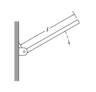

D8.2 Problems#
Problem D8.1
A uniform cylindrical grindstone has a mass of \(10.0\) kg and a radius of \(12\) cm.
What is the rotational kinetic energy of the grindstone when it is rotating at \(1.5\times 10^3\) rev/min?
After the grindstone’s motor is turned off, a knife blade is pressed against the outer edge of the grindstone with a perpendicular force of \(5.0\) N. The coefficient of kinetic friction between the grindstone and the blade is \(0.80\). Use the work energy theorem to determine how many turns the grindstone makes before it stops.
This problem is a slightly modified version from OpenStax. Access for free
# Make your own script here
Show code cell source
%reset -f
Problem D8.2
A \(2.0\) kg block on a frictionless inclined plane at \(40\^circ\) has a cord attached to a pulley of mass \(1.0\) kg and radius \(20.0\) cm. The block slides a distance of \(0.50\) m.
What is the acceleration of the block down the plane?
What is the work done by the cord on the pulley?
This problem is a slightly modified version from OpenStax. Access for free
# Make your own script here
Show code cell source
%reset -f
Problem D8.3
A thin plank of mass \(M\) and length \(l\) is pivoted at one end, as shown. The plank is released at \(60.0^\circ\) from the vertical. What is the magnitude and direction of the force on the pivot when the plank is horizontal?
This is Problem 7.20 in Kleppner and Kolenkov.
Show code cell source
%reset -f
Problem D8.4
A marble of mass \(M\) and radius \(R\) is rolled up a plane of angle \(\theta\). If the initial velocity of the marble is \(v_0\), what is the distance \(l\) it travels up the plane before it begins to roll back down?
This is Problem 7.25 in Kleppner and Kolenkov.
%reset -f